9 IAV ~ cytokines (4)
Analysis dates: 2022 ## Libraries
library(vegan)
library(mixOmics)
library(tidyverse)
library(pairwiseAdonis)
library(mlr3)
library(mlr3tuning)
library(rpart)
library(rpart.plot)
library(ggmosaic)
library(ggpubr)
library(EnvStats)
library(gridExtra)
library(grid)9.1 Data
cyto <-
read.csv("Output Files/cleaned_cytokine.csv") %>%
filter(analysis.year=="2022")
cytobin <-
read.csv("Output Files/cleaned_cytokine_bin.csv") %>%
filter(analysis.year=="2022")
meta <- read.csv("Output Files/metadata_cyto.csv") %>%
mutate(iav=gsub("neg", "IAV-", iav),
iav=gsub("pos", "IAV+", iav))
# Merge cytokine & metadata
data <- merge(cyto, meta, by="Sample") %>%
filter(!is.na(iav)) %>%
mutate(analysis.year=factor(analysis.year))
databin <-
merge(cytobin, meta, by="Sample") %>%
filter(!is.na(iav)) %>%
mutate(analysis.year=factor(analysis.year))9.2 PCA
pca <-
prcomp(data[,2:10], center=TRUE, scale=TRUE)
pca_df <-
data.frame(
x=pca$x[,1],
y=pca$x[,2],
molt.stage=data$molt.stage,
year=factor(data$year),
location=data$location,
sex=data$sex,
iav=data$iav,
iavser=data$iavser,
bc_bin=data$bc_bin,
analysis.year=factor(data$analysis.year),
batch=factor(data$batch)
)
pca_labelx <-
paste("PC1 (",
round(abs(summary(pca)$importance[2,1]*100), digits=0),
"%)",
sep="")
pca_labely <-
paste("PC2 (",
round(abs(summary(pca)$importance[2,2]*100), digits=0),
"%)",
sep="")9.3 PERMANOVA
9.3.1 Cytokine Presence/Absence
9.3.1.1 Create similarity matrix (Sorensen)
databin_perm <-
databin %>%
select(2:10)
databin_dist <-
betadiver(databin_perm, method=11)
plot(databin_dist)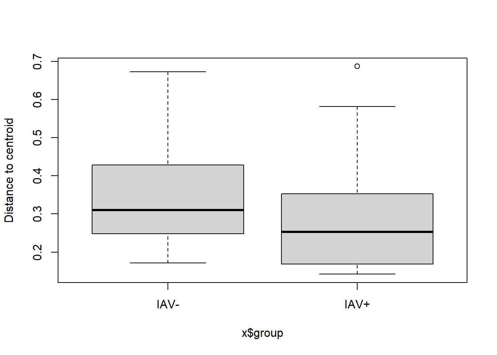
# Dissimilarity summary stats
mean(1-databin_dist); min(1-databin_dist); max(1-databin_dist); median(1-databin_dist)## [1] 0.3763436## [1] 0## [1] 0.7777778## [1] 0.33333339.3.1.2 Run PERMANOVA
## Permutation test for adonis under reduced model
## Permutation: free
## Number of permutations: 4999
##
## adonis2(formula = (1 - databin_dist) ~ iav, data = databin, permutations = 4999)
## Df SumOfSqs R2 F Pr(>F)
## Model 1 0.1036 0.01619 1.1522 0.339
## Residual 70 6.2922 0.98381
## Total 71 6.3957 1.00000## [1] 1.6193019.3.1.3 Visualization
Principal Coordinates Analysis
# Use 1 - Sorensen's for dissimilarity
databin_pco <- cmdscale(1-databin_dist, eig=TRUE)
plot(databin_pco$points, type="n",
cex.lab=1.5, cex.axis=1.1, cex.sub=1.1)
ordispider(jitter(databin_pco$points, factor=1), factor(databin$iav), show.groups="IAV+",
col="deepskyblue", label = TRUE, display="sites", lwd=1.5, cex=1.2)
ordispider(jitter(databin_pco$points, factor=1), factor(databin$iav), show.groups="IAV-",
col="firebrick", label = TRUE, display="sites", lwd=1.5, cex=1.2)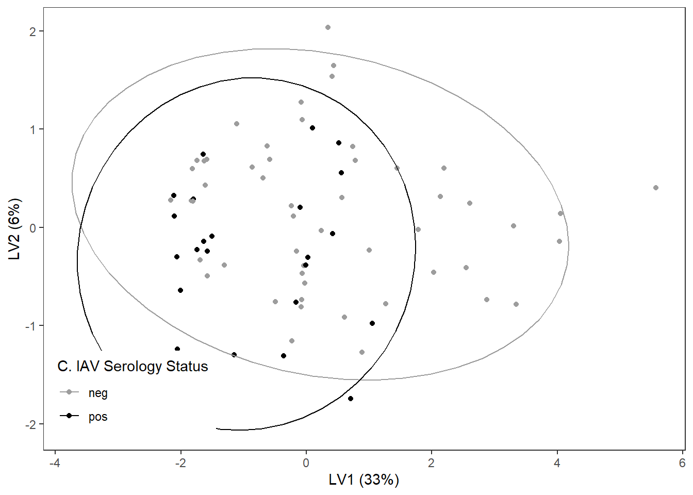
9.3.1.4 Homogeneity of group dispersions
## Warning in betadisper(databin_dist, group = databin$iav, type = "centroid"):
## some squared distances are negative and changed to zero## Analysis of Variance Table
##
## Response: Distances
## Df Sum Sq Mean Sq F value Pr(>F)
## Groups 1 0.00000 0.000000 0 0.9985
## Residuals 70 0.84877 0.012125##
## Homogeneity of multivariate dispersions
##
## Call: betadisper(d = databin_dist, group = databin$iav, type =
## "centroid")
##
## No. of Positive Eigenvalues: 63
## No. of Negative Eigenvalues: 8
##
## Average distance to centroid:
## IAV- IAV+
## 0.4430 0.4431
##
## Eigenvalues for PCoA axes:
## (Showing 8 of 71 eigenvalues)
## PCoA1 PCoA2 PCoA3 PCoA4 PCoA5 PCoA6 PCoA7 PCoA8
## 0.5 0.5 0.5 0.5 0.5 0.5 0.5 0.5
9.3.2 Cytokine Concentration
9.3.2.1 Run PERMANOVA
data_perm <-
data %>%
select(2:10)
data_dist <-
vegdist(data_perm, method="bray")
data_adonis <- adonis2(data_dist ~ iav, data=data,
permuations=4999)
data_adonis## Permutation test for adonis under reduced model
## Permutation: free
## Number of permutations: 999
##
## adonis2(formula = data_dist ~ iav, data = data, permuations = 4999)
## Df SumOfSqs R2 F Pr(>F)
## Model 1 0.1642 0.01845 1.3161 0.226
## Residual 70 8.7326 0.98155
## Total 71 8.8968 1.00000## [1] 1.8454229.3.2.2 Visualization
# Use Bray-Curtis dissimilarity matrix
data_pco <- cmdscale(data_dist, eig=TRUE)
plot(data_pco$points, type="n",
cex.lab=1.5, cex.axis=1.1, cex.sub=1.1)
ordispider(jitter(data_pco$points, factor=1), factor(data$iav), show.groups="IAV+",
col="deepskyblue", label = TRUE, display="sites", lwd=1.5, cex=1.2)
ordispider(jitter(data_pco$points, factor=1), factor(data$iav), show.groups="IAV-",
col="firebrick", label = TRUE, display="sites", lwd=1.5, cex=1.2)9.4 Cytokine Importance
9.4.2 Cross Validation
# Creating task and learner
task <- as_task_classif(iav ~ .,
data = data_cart)
task <- task$set_col_roles(cols="iav",
add_to="stratum")
learner <- lrn("classif.rpart",
predict_type = "prob",
maxdepth = to_tune(2, 5),
minbucket = to_tune(1, 35),
minsplit = to_tune(1, 30)
)
# Define tuning instance - info ~ tuning process
instance <- ti(task = task,
learner = learner,
resampling = rsmp("cv", folds = 10),
measures = msr("classif.ce"),
terminator = trm("none")
)
# Define how to tune the model
tuner <- tnr("grid_search",
batch_size = 10
)
# Trigger the tuning process
#tuner$optimize(instance)
# optimal values:
# maxdepth = 2
# minbucket = 1
# minsplit = 27
# classif.ce = 0.32619059.4.3 Run model with optimized parameters
cart_model <- rpart(formula=iav ~ .,
data=data_cart,
method="class",
maxdepth=2,
minbucket=1,
minsplit=27)
# plot optimized tree
rpart.plot(cart_model)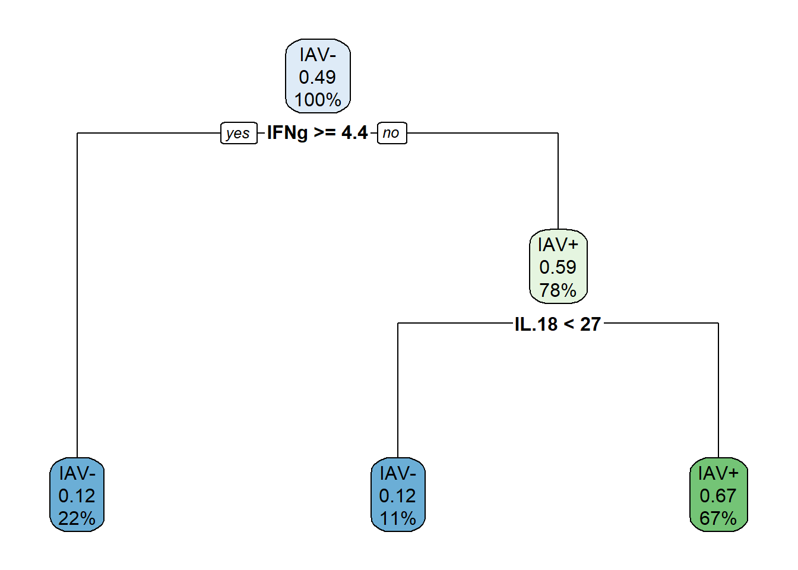
## IFNg IL.18 KC.like IL.10 IL.8 IL.15
## 5.3650794 4.0238095 1.0059524 0.6706349 0.6706349 0.33531759.4.4 Plot
Variable importance: the sum of the goodness of split measures for each split for which it was the primary variable, plus goodness * (adjusted agreement) for all splits in which it was a surrogate. In the printout these are scaled to sum to 100 and the rounded values are shown, omitting any variable whose proportion is less than 1%. (https://cran.r-project.org/web/packages/rpart/vignettes/longintro.pdf)
9.4.4.1 Variable Importance
varimp <-
data.frame(imp=cart_model$variable.importance) %>%
rownames_to_column() %>%
rename("variable" = rowname) %>%
arrange(imp) %>%
mutate(variable=gsub("\\.","-",variable),
variable = forcats::fct_inorder(variable))
varimp_plot <-
ggplot(varimp) +
geom_segment(aes(x = variable,
y = 0,
xend = variable,
yend = imp),
linewidth = 0.5,
alpha = 0.7) +
geom_point(aes(x = variable,
y = imp),
size = 1,
show.legend = F,
col="black") +
labs(x="Cytokine",
y="Variable Importance") +
coord_flip() +
theme_classic() +
theme(text=element_text(size=10, color="black"))9.4.4.3 Proportions
ifng_prop <-
databin %>%
ggplot(data=.) +
geom_mosaic(aes(x=product(IFNg,iav), fill=IFNg)) +
scale_fill_manual(values=c("Present"="gray60", "Absent"="lightgray")) +
scale_y_continuous(labels = scales::percent) +
labs(title="IFNg") +
theme_bw() +
theme(panel.grid.major = element_blank(),
panel.grid.minor = element_blank(),
axis.title.x = element_blank(),
axis.title.y = element_blank(),
legend.position="bottom",
text = element_text(size=10),
plot.title = element_text(hjust = 0.5))
ifng_prop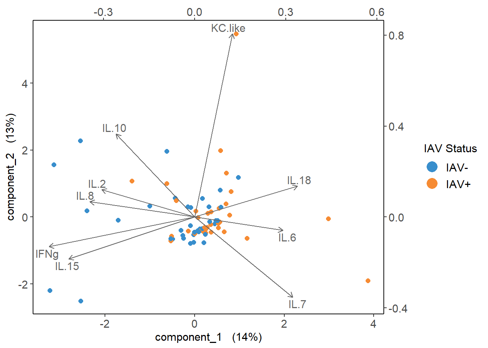
cyto_leg <- get_legend(ifng_prop)
ifng_prop <-
ifng_prop +
theme(legend.position="none")
il18_prop <-
databin %>%
ggplot(data=.) +
geom_mosaic(aes(x=product(IL.18,iav), fill=IL.18)) +
scale_fill_manual(values=c("Present"="gray60", "Absent"="lightgray")) +
scale_y_continuous(labels = scales::percent) +
labs(title="IL-18") +
theme_bw() +
theme(panel.grid.major = element_blank(),
panel.grid.minor = element_blank(),
axis.title.x = element_blank(),
axis.title.y = element_blank(),
legend.position="none",
text = element_text(size=10),
plot.title = element_text(hjust = 0.5))
il18_prop
9.4.4.4 Concentrations
ifng <-
data %>%
select(iav, IFNg) %>%
filter(!IFNg == 0) %>%
ggplot(., aes(x=iav, y=log(IFNg))) +
geom_boxplot(color="black", fill="gray60", lwd=0.25,
outliers=FALSE) +
geom_point(size=0.75, position=position_jitter(width=0.2)) +
labs(x=NULL, y=NULL) +
stat_n_text(size=3) +
theme_classic() +
theme(text = element_text(size=10),
panel.border=element_rect(color="black", fill=NA, linewidth=0.5))
ifng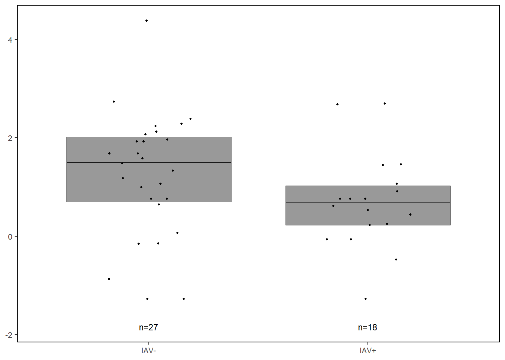
il18 <-
data %>%
select(iav, IL.18) %>%
filter(!IL.18 == 0) %>%
ggplot(., aes(x=iav, y=log(IL.18))) +
geom_boxplot(color="black", fill="gray60", lwd=0.25,
outliers=FALSE) +
geom_point(size=0.75, position=position_jitter(width=0.2)) +
labs(x=NULL, y=NULL) +
stat_n_text(size=3) +
theme_classic() +
theme(text = element_text(size=10),
panel.border=element_rect(color="black", fill=NA, linewidth=0.5))
il18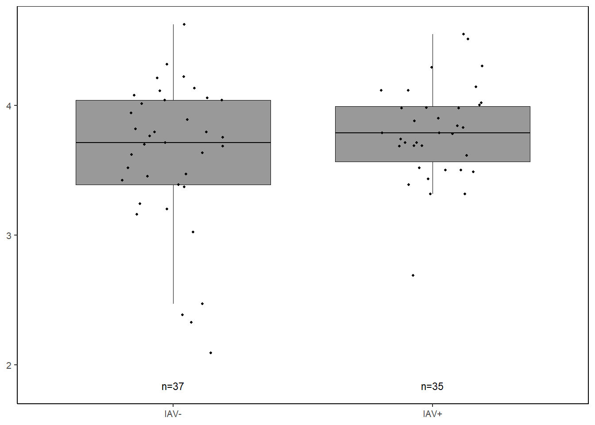
9.4.4.5 Combine together
prop_grid <- grid.arrange(ifng_prop, il18_prop, ncol=2,
left=textGrob("Proportion of Samples",
rot=90, gp=gpar(fontsize=10)))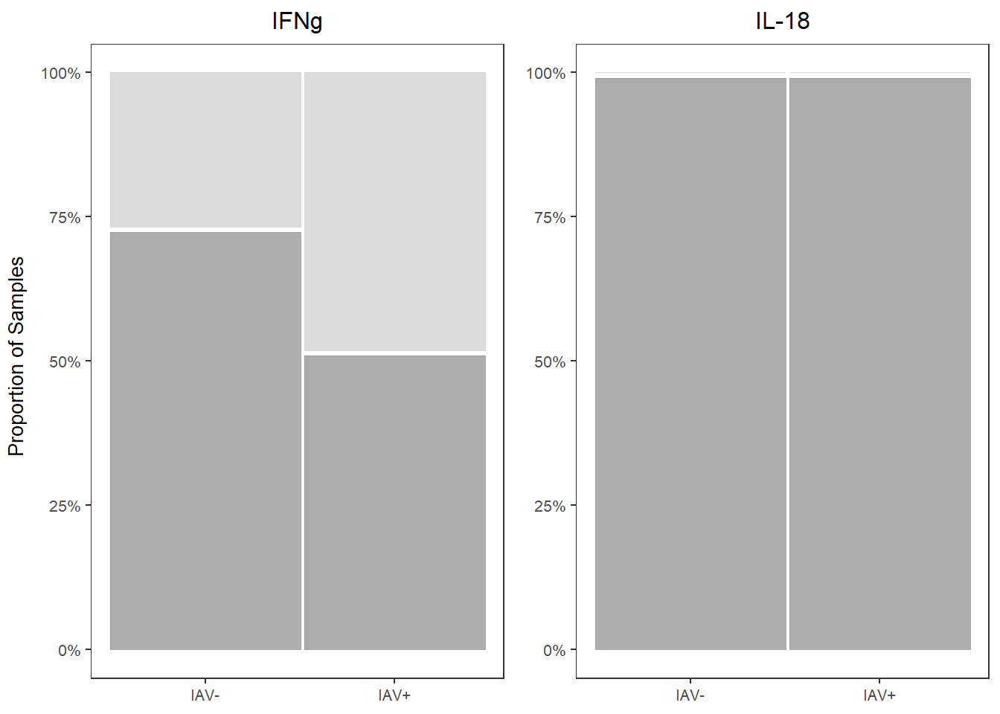
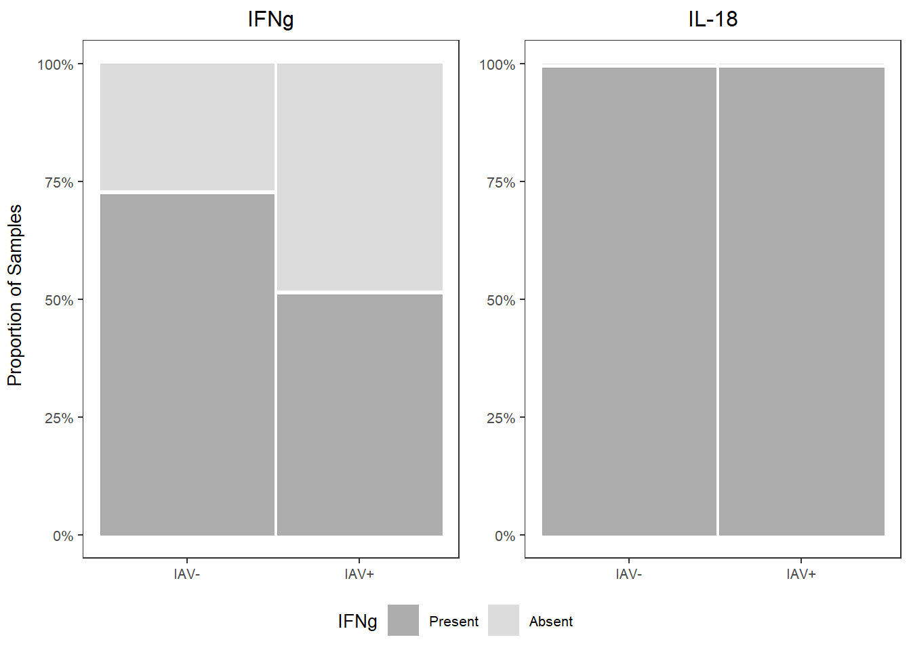
conc_grid <- grid.arrange(ifng, il18, ncol=2,
left=textGrob("log(Concentration (pg/mL))",
rot=90, gp=gpar(fontsize=10)))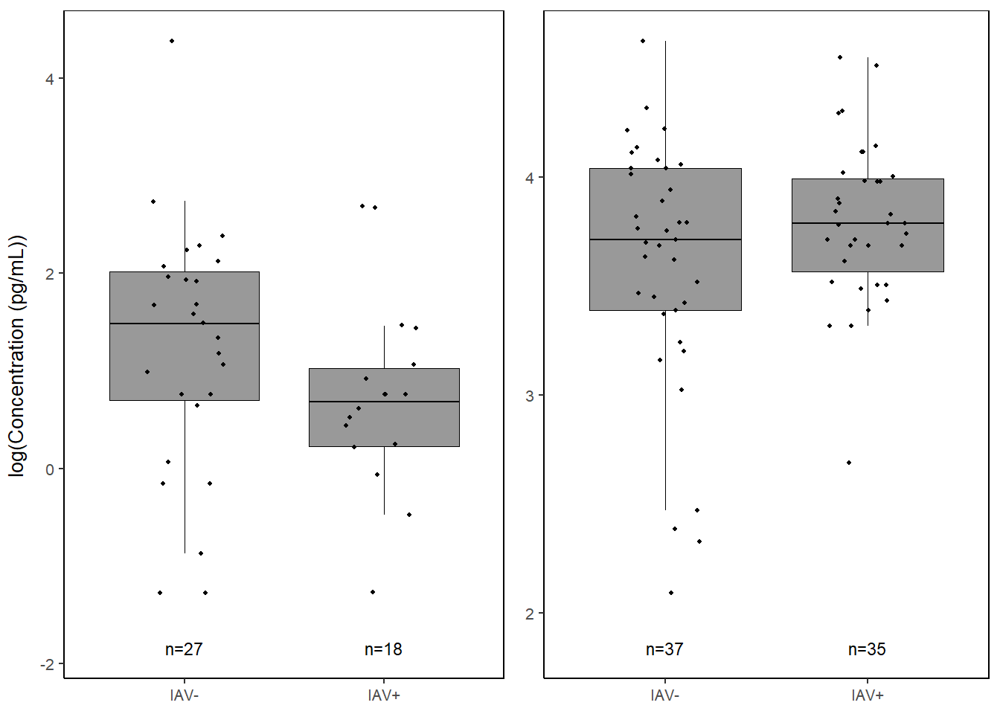
cyto_grid <- grid.arrange(prop_grid, conc_grid,
ncol=1,
heights=c(4,3.5),
bottom=textGrob("IAV Status", gp=gpar(fontsize=10)))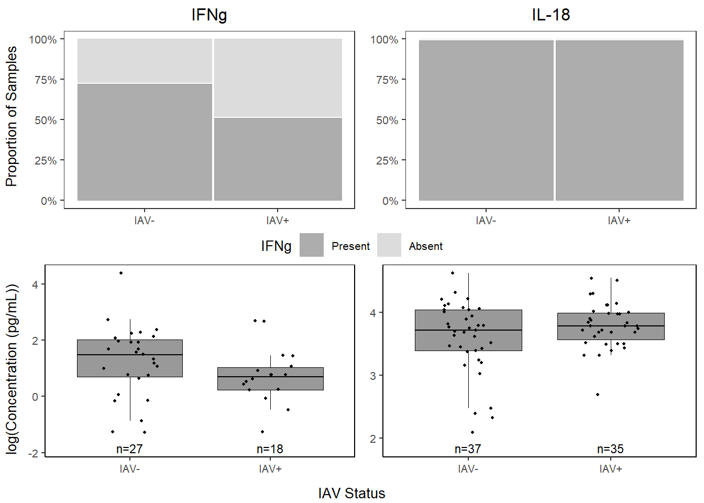
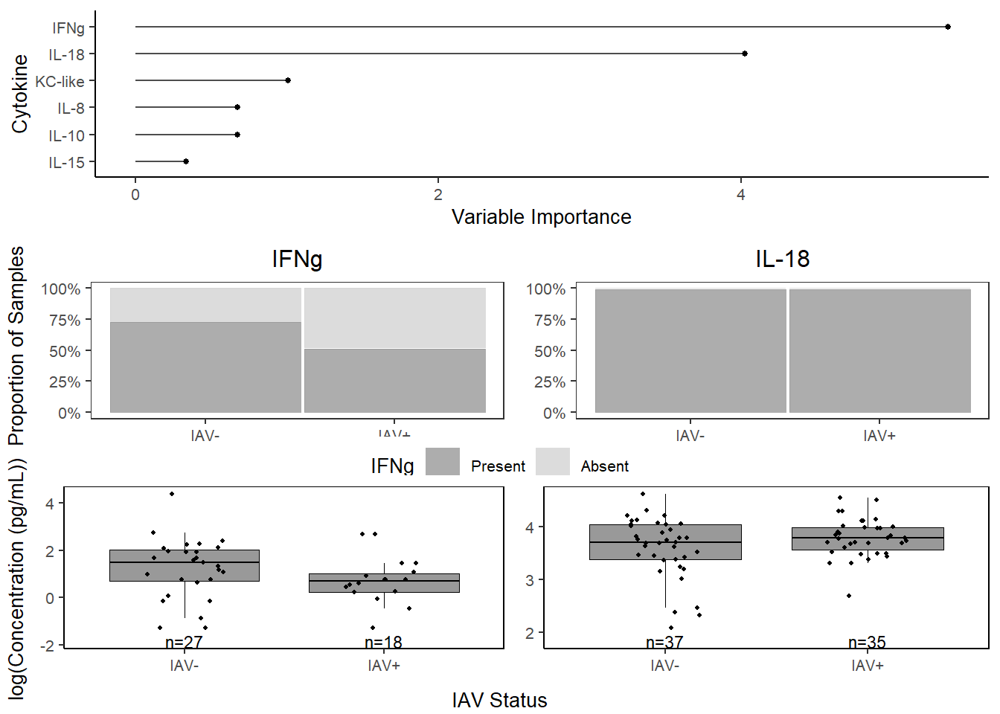
9.5 How different IAV+ and IAV- groups are
9.5.1 PLSDA
9.5.1.3 Visualizations
# Set x and y axis labels based on model loadings
labelx <-
paste("X-variate 1: ",
round(abs(plsda_model$prop_expl_var$X[1]*100), digits=0),
"% expl. var",
sep="")
labely <-
paste("X-variate 2: ",
round(abs(plsda_model$prop_expl_var$X[2]*100), digits=0),
"% expl. var",
sep="")
# ggplot2
plsda_ggplot <-
data.frame(x = plsda_model$variates$X[,1],
y = plsda_model$variates$X[,2],
iav = plsda_model$Y)
iav_plsda_ggplot <-
ggplot(plsda_ggplot,
aes(x=x,
y=y,
col=iav)) +
geom_point() +
stat_ellipse() +
labs(x=labelx,
y = labely,
name="IAV Status") +
scale_color_manual("IAV Status",
values=c("#9d9d9d","#008ba2")) +
theme_bw() +
theme(panel.grid=element_blank())
iav_plsda_ggplot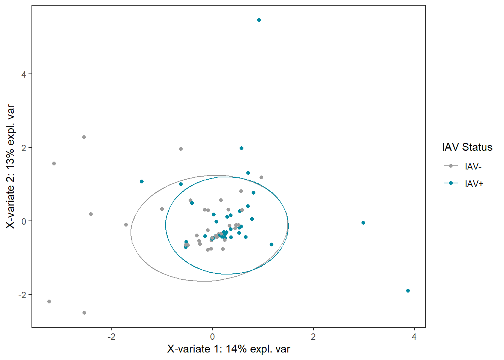
9.5.1.4 Cytokine Contributions
plsda_loadings <-
plsda_model$loadings$X %>%
data.frame() %>%
select(1:2) %>%
arrange(comp1)
plsda_loadings## comp1 comp2
## IFNg -0.4797283 -0.13081532
## IL.15 -0.4142470 -0.18449715
## IL.8 -0.3447793 0.06701028
## IL.2 -0.3058896 0.11974639
## IL.10 -0.2586956 0.36559908
## KC.like 0.1243663 0.80623318
## IL.6 0.2902492 -0.05904909
## IL.7 0.3232721 -0.35269426
## IL.18 0.3386431 0.13588196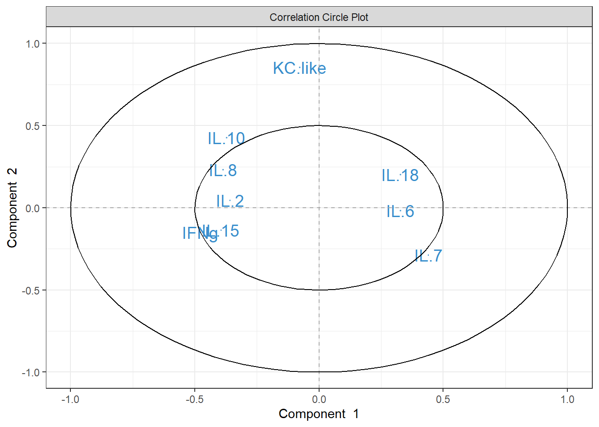